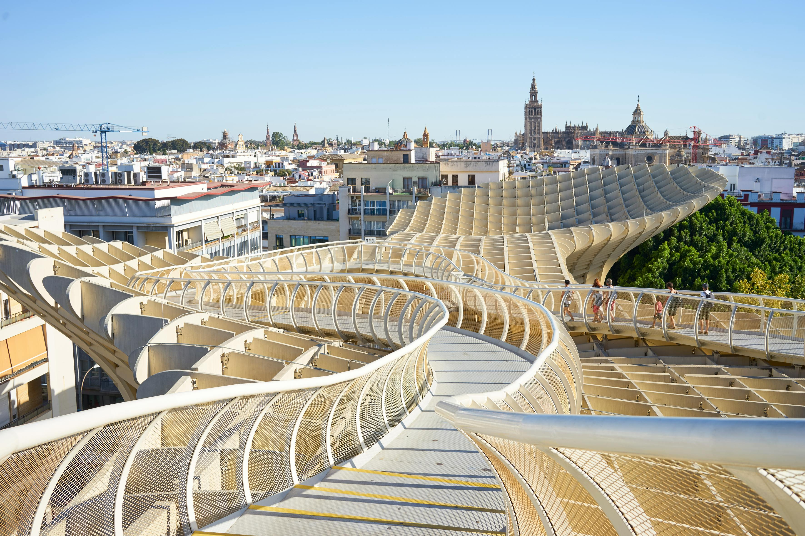
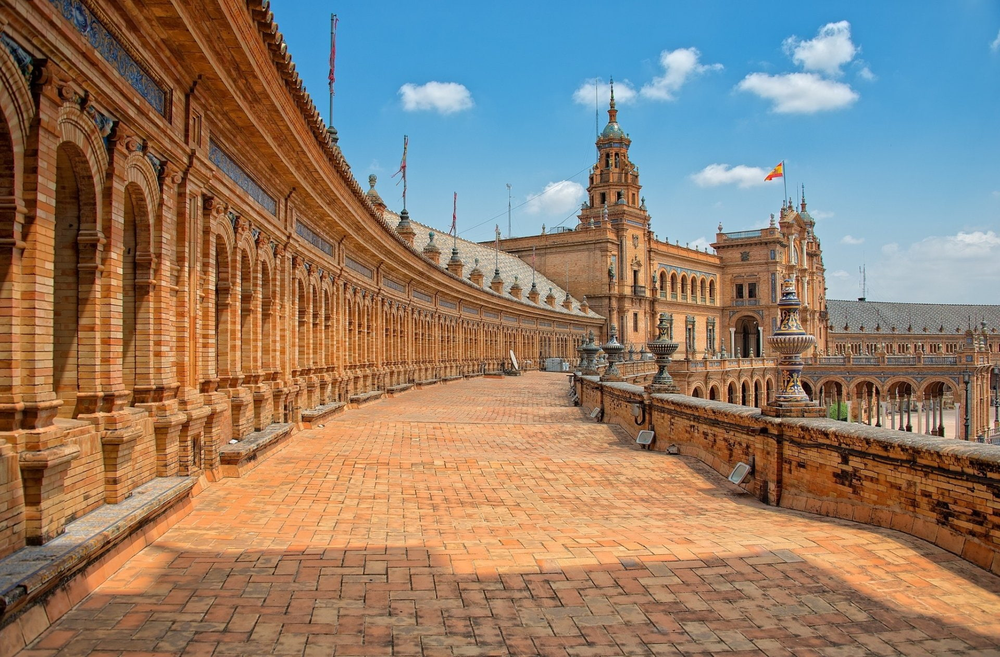
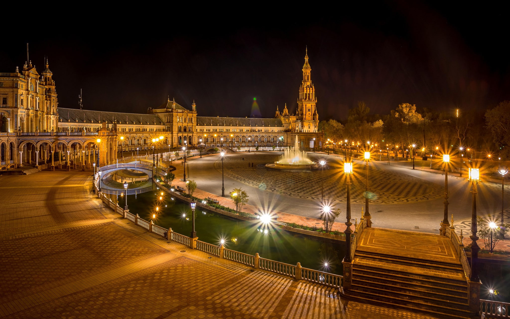

إشبيلية
عاصمة الأندلس في جنوب إسبانيا
شمسية ميترو باراسول
شمسية متروبول باراسول
تعتبر أشبيليه ىمن أكثر المدن الشهيرة بوجود أهم المعالم السياحية الأثرية المتأثرة بالفن العمراني البديع
كما أنه بها رونق خاص والذي حولها لواحدة من أهم وأجمل المدن الإسبانية ، وكنوع من التخليد لجمالها والذي
يتحدي كامل المنحوتات من خلال البناء والتصاميم الفريدة من نوعها والتي حولتها إلي أيقونة عالمية والتي تعرف
بأسم متروبول الشمسية الملونة
يعتبر هذا المتروبول واحداً من أضخم المباني الخشبية في العالم كما أنه من أجمل المعالم والأيقونات
السياحية الموجودة بأشبيليه يأتي إليها الزوار بأستمرار علي مدار العام من جميع أنحاء العالم حيث تتميز
بمناظر بانورامية ساحرة وتجربة رائعة وحقيقية أثناء التعارف علي الذوق الفني الرفيع الذي بنيت به.
في عام 2004 تم إقامة مسابقة بمدينة أشبيليه تعبر الأكبر من نوعها في إسبانيا والهدف منها هو بناء نصب
يرمز إلي مدينة إشبيليه لتصبح أيقونتها أمام العالم ، وفازت في هذه المسابقة المصمم يورغان ماير بتصميم
يجمع بين الجمال والنظرة الخيالية نحو المستقبل لينتج في عام 2011م متروبول الشمسية الملونة والتي تعتبر
أعظم وأكبر مبني خشبي في العالم.
أثناء التجول في هذا المبني الفريد من نوعه ينبهر الزائر بروعة جماله والذي يتمثل في كيانها الذي يشبه
هيئة فطر عملاقة صمم سطحه من بعض الأشكال الهندسية المتداخلة والتي شكلت خلية ضخمة تم بناؤها بالكامل من
خشب متين أستورد من فنلندا ، كما يقع هذا الهيكل علي مساحة كبيرة ضمن بداخلها مجموعة من الحدائق الصغيرة
ومواقع كثييرة مختلفة للإستراحة.
يمكن للزائر أن يتمتع بفرصة التجول والتعرف عليها أكثر من الداخل من خلال صعود بعض الأدراج ثم المشي علي
طريق منعرج مبدع في تكوينه وتشكيله ثم يخرج علي سطحها الواسع والذي يستمتع من خلاله بالمناخ الرائع
والمعتدل والتمتع بألقاء نظرة واسعة علي المدينة القديمة وما يحيط بها من معالم سياحية وأثرية.
تتميز الميتروبول بموقع إستراتيجي هام حيث يجاورها كاتدرائية إشبيليه وحديقة ماريا لويزا وقصر كاسا دي
بيلاتوز والكثير من المعالم السياحية الهامة ، كما يمكن للزائر التمتع بتناول وجبة شهية من المطاعم
الأندلسية الموجودة هناك وتناول القهوة أو المشروبات المفضلة ، كما يمكنه أن يذهب إلي المتجر الخاص
بالمتروبول لأقتناء بعض الهدايا التذكارية .

والمتناسق، والذي يجمع بين الوظيفة والجمال بطريقة مبهرة.
المظهر الخارجي للشمسية يشبه أزهار النرجس الكبيرة، حيث تتكون من مجموعة من المرايا البيضاء اللامعة المرتبة
بشكل دائري. هذه المرايا تعكس ضوء الشمس بطريقة جذابة وديناميكية، مما يخلق لمعانًا وبريقًا ساحراً يجذب
الأنظار.
عندما تكون الشمسية موجهة نحو الشمس، فإن المرايا تتتبع حركتها بدقة، مما يؤدي إلى تركيز الضوء الساطع على
نقطة مركزية. هذه اللمسة الجمالية المتحركة تضفي على الشمسية طابعًا ديناميكيًا وتفاعليًا، مما يُضفي عليها
جاذبية خاصة.
إن التصميم الهندسي المتقن للشمسية، مع استخدام المواد عالية الجودة، يُضفي عليها مظهرًا أنيقًا وعصريًا.
وعندما تكون مدمجة في المشهد الطبيعي، تندمج الشمسية بشكل مُذهل مع البيئة المحيطة.
بالمجمل، شمسية ميترو باراسول هي تحفة هندسية وفنية رائعة، تجمع بين الكفاءة التقنية والجمال البصري بطريقة
مبتكرة ومثيرة للإعجاب
.jpg)
ساحة إسبانيا
ساحة إسبانيا هي واحدة من أكثر المعالم الشهيرة والمعروفة على مستوى العالم في إشبيلية، عاصمة منطقة الأندلس
في جنوب إسبانيا. تقع هذه الساحة الفريدة في قلب المدينة القديمة، وتُعد إحدى أبرز إنجازات العمارة
الإسبانية في القرن العشرين.
تم بناء ساحة إسبانيا في عام 1928 خصيصًا لمعرض إكسبو الإيبيري-الأمريكي، الذي كان بمثابة منصة لإظهار
وإبراز التاريخ والثقافة الإسبانية على المستوى الدولي. صُمم التصميم المعماري للساحة بأسلوب متميز،
يجمع بين عناصر الطراز النهضوي والباروكي والأندلسي في نمط فريد وبديع.
تتميز ساحة إسبانيا بشكلها المميز على هيئة نصف دائرة، حيث يحيط بها مبنى قصري ضخم على الجانبين مع
برجين شاهقين في الطرفين. يتوسط الساحة نافورة كبيرة تضفي جمالاً وفخامة على المكان. أما حول محيط
الساحة، فتنتشر قنوات مائية شعاعية تتقاطع فوقها جسور زخرفية، مضيفةً طابعًا رومانسيًا وخلابًا إلى
المنظر العام.
إحدى أبرز ملامح ساحة إسبانيا هي الجدران المكسوة بالبلاط الملون المزخرف، والتي تصور خريطة مصغرة
لمختلف مناطق إسبانيا. هذه اللوحات الفسيفسائية الرائعة تجذب الزوار للتقاط الصور التذكارية في هذا
المكان الساحر.
بالإضافة إلى طابعها المعماري البديع، تُعد ساحة إسبانيا مركزًا حيويًا للحياة الاجتماعية والثقافية في
إشبيلية. تستضيف الساحة العديد من الفعاليات والأنشطة على مدار العام، بدءًا من المهرجانات والعروض
الفنية وصولاً إلى الحفلات الموسيقية والأداءات الراقصة ساحة إسبانيا في إشبيلية تستضيف العديد من
الأنشطة والفعاليات الهامة على مدار العام، ومن أبرزها:
المهرجانات والعروض الفنية: الساحة تُستخدم كمنصة لإقامة مهرجانات وعروض فنية متنوعة.
الحفلات الموسيقية: تُقام في الساحة حفلات موسيقية ومعارض فنية.
الأداءات الراقصة: الساحة تشهد أداءات راقصة وعروض فلكلورية.
الفعاليات الثقافية والاجتماعية: تُستخدم الساحة لاستضافة مختلف الفعاليات والأنشطة الثقافية
والاجتماعية.
يتضح أن ساحة إسبانيا تُعد مركزًا حيويًا للحياة الاجتماعية والثقافية في مدينة إشبيلية، حيث تُستغل
طوال العام لاستضافة مجموعة متنوعة من الفعاليات والأنشطة الترفيهية والثقافية المختلفة.
.

بفضل تصميمها المعماري المتميز والموقع المركزي في المدينة، تُعد ساحة إسبانيا واحدة من أهم المعالم
السياحية في إشبيلية ووجهة لا غنى عنها لكل زائر للمدينة. إنها تجسيد للتراث الإسباني الغني والهوية
الأندلسية الفريدة، وتُشكل واحدة من أبرز المعالم الرمزية لهذه المدينة الأندلسية الجميلة.
